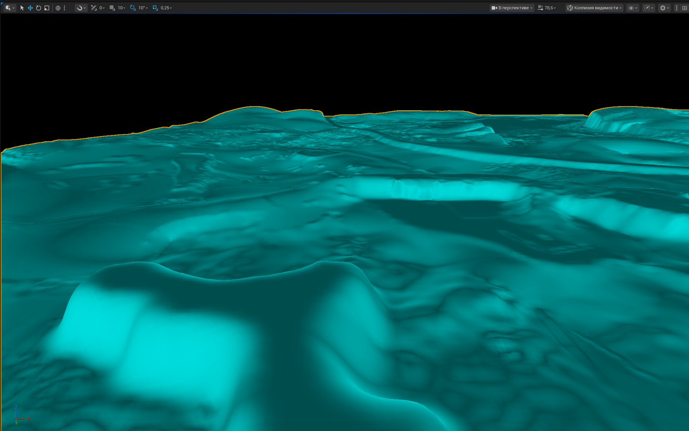

Окрестности Любеча (Outlands2): настоящая карта высот в Unreal
Это снимок непосредственно открытого окна Unreal Editor, без генерации изображения. Рельеф восстановлен из пользовательских архивов BigWorld, в отдельном техническом уровне, без замены нашего Любича.
Режим: техническая визуализация коллизии. Цвет бирюзовый — это отладочная окраска поверхности, не материалы и не освещение готовой игры. Первоначальный обычный рендер был чёрным; просмотр карты стал доступен в диагностическом режиме. Здания, деревья и текстуры оригинальной игры не установлены. Художественная приёмка не пройдена.

Карта приватного просмотра: /Game/_PrivateSourceReview_NotForShipping/Maps/GZ_L_AZ_Outlands2_OriginalHeightfield_Viewer. Коммерческие права на оригинальные игровые ресурсы не установлены.